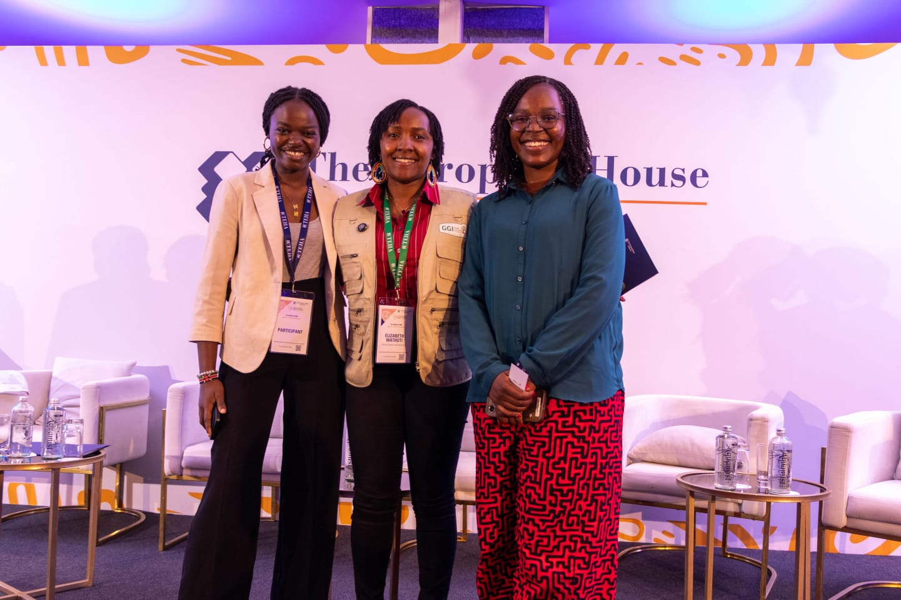
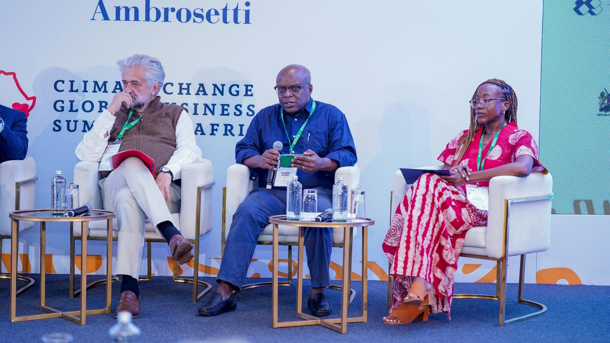
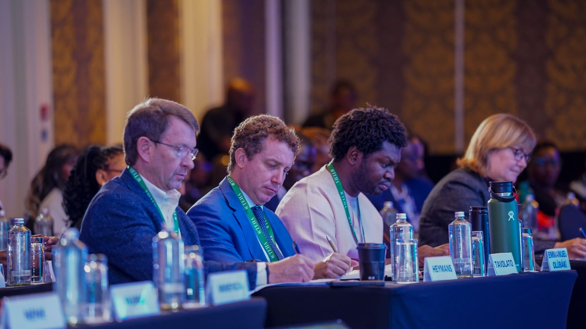

See the real-world impact of our community-driven initiatives.
Our regular clean-up drives mobilize hundreds of volunteers across Nairobi neighborhoods. From collecting waste to sorting recyclables, these campaigns create cleaner, healthier environments while raising environmental awareness.
Results: Over 20 clean-up events conducted, 50+ tons of waste collected, 500+ volunteers engaged across multiple communities.
"The clean-up drives have transformed our neighborhood. We now take pride in keeping our streets clean."


Our innovation workshops provide young people with hands-on experience in design thinking, prototyping, and social entrepreneurship. Participants develop solutions to real community problems and pitch their ideas to experienced mentors.
Results: 15 workshops held, 200+ youth trained, 25 social enterprise ideas developed and 5 currently operational.
"The workshop opened my eyes to the power of innovation. I now run a small recycling business that serves my community."
In partnership with local schools and community groups, we organize regular tree planting campaigns. Our goal is to plant 5,000 trees by end of 2026, contributing to Kenya's reforestation efforts and combating climate change at the local level.
Results: 2,000+ trees planted, 10 schools engaged, 15 communities participating in our green initiative.
"Planting trees with Ubuntu Retold taught my students about environmental responsibility in a hands-on way."

Your support enables us to expand our projects and reach more communities.